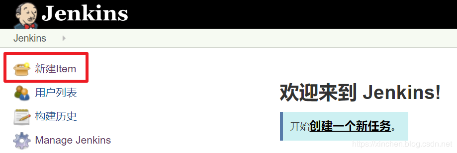

原文连接:https://www.cnblogs.com/bolingcavalry/p/11874732.html
关于Jenkins集群
在《快速搭建Jenkins集群》一文中，我们借助docker快速搭建了Jenkins集群，今天就在这个集群环境中创建pipeline任务，体验Jenkins集群下的并行任务；
环境信息
整个集群环境一共有三台电脑，信息如下：
| 主机名 | IP地址 | 作用 |
|--|--|--|
| master | 192.168.133.131 | Jenkins集群的master节点，提供web服务 |
| agent1 | 192.168.133.132 | Jenkins集群的一号工作接节点，标签是maven |
| agent2 | 192.168.133.133 | Jenkins集群的二号工作接节点，标签是gradle |
实战内容
本次实战要体验Jenkins集群同时执行两个任务，都是编译构建GitHub上的热门开源项目：
- 在agent1上编译和构建spring-cloud-alibaba，再通过scp命令将构建结果传输到master电脑的/usr/local/build_result目录下；
- 在agent2编译和构建spring-framework，再通过scp命令将构建结果传输到master电脑的/usr/local/build_result目录下；
准备工作
要做以下准备工作才能顺利执行后续的任务：
- 在master电脑上创建文件夹/usr/local/build_result
- 配置maven，在Jenkins网页上选择Global Tool Configuration，如下图红框所示：
- 新增一个maven配置，名为mvn-3.6.2，然后点击“保存”按钮，如下图：
- agent1和agent2上用scp命令传输文件到master上的时候，第一次ssh要在控制台输入"yes"，为了避免执行任务的时候出现这个等待输入的操作，我们去手动执行一遍，后面就再也不用了，ssh登录agent1之后，执行以下命令进入容器：
docker exec -it agent /bin/bash- 执行命令ssh root@192.168.133.131，这时候控制台提示输入yes或者no，请您输入yes，再根据提示输入master的密码，此时登录master成功：
[root@agent1 16]# docker exec -it agent /bin/bash
root@82eb8cfec0a6:/# ssh root@192.168.133.131
The authenticity of host '192.168.133.131 (192.168.133.131)' can't be established.
ECDSA key fingerprint is SHA256:DPE2nldWHiOhC4DB9doy7jPWNZVup6XFZ+sR2i1gqz8.
Are you sure you want to continue connecting (yes/no)? yes
Warning: Permanently added '192.168.133.131' (ECDSA) to the list of known hosts.
root@192.168.133.131's password:
Last login: Sat Nov 16 19:59:42 2019 from 192.168.133.132- 此时您是在agent1的容器中ssh登录了master，所以要连续输入两次exit命令才能返回到agent1的控制台；
- 在agent2电脑上也执行相同的操作；
至此，准备完毕，可以创建任务了；
编译构建spring-cloud-alibaba的任务
spring-cloud-alibaba是个maven工程，要用maven来编译构建：
- 在Jenkins网页上，点击下图红框位置，创建一个任务：
 - 如下图，创建名为spring-clolud-alibaba的pipeline任务：
- 下图红框位置就是输入pipeline脚本的地方：
- 在上图红框位置输入以下内容：
pipeline {
agent {
label 'maven'
}
tools {
maven 'mvn-3.6.2'
}
stages {
stage('Checkout') {
steps {
echo '从GitHub下载spring-cloud-alibaba工程的源码(2.1.1.RELEASE归档包)'
sh 'wget https://github.com/alibaba/spring-cloud-alibaba/archive/v2.1.1.RELEASE.tar.gz'
echo '下载结束，解压归档包'
sh 'tar -zxf v2.1.1.RELEASE.tar.gz'
}
}
stage('Build') {
steps {
echo '开始编译构建'
sh 'cd spring-cloud-alibaba-2.1.1.RELEASE && mvn clean package -U -DskipTests'
}
}
stage('Save') {
steps {
echo '将构建结果传送到存储服务器'
sh 'cd spring-cloud-alibaba-2.1.1.RELEASE/spring-cloud-alibaba-nacos-discovery/target && sshpass -p 888888 scp ./*.jar root@192.168.133.131:/usr/local/build_result'
echo '传送完毕'
}
}
stage('Clean') {
steps {
echo '清理Maven工程'
sh 'cd spring-cloud-alibaba-2.1.1.RELEASE && mvn clean'
echo '清理完毕'
}
}
}
}- 点击底部的"保存"按钮后，点击下图红框中的"立即构建"即可开始任务：
点击下图红框中的红色圆球，即可跳转到实时输出任务信息的页面：
页面实时输出构建信息：

主页面可以看到是agent1在执行任务，如下图红框所示，可见pipeline脚本中的标签已经生效了，将任务调度到标签为maven的节点去执行：
编译构建spring-cloud-alibaba工程是个费时的操作，我们现在去创建另一个任务：编译构建spring-framework编译构建spring-framework的任务
spring-framework是个gradle工程，不需要准备gradle环境，在执行编译命令时会自动下载gradle工具：- 创建名为spring-framework的pipeline任务：
- pipeline脚本如下：
pipeline {
agent {
label 'gradle'
}
stages {
stage('Checkout') {
steps {
echo '从GitHub下载spring-framework工程的源码(master分支)'
checkout([$class: 'GitSCM', branches: [[name: '*/master']], doGenerateSubmoduleConfigurations: false, extensions: [], submoduleCfg: [], userRemoteConfigs: [[url: 'https://github.com/spring-projects/spring-framework.git']]])
}
}
stage('Build') {
steps {
echo '开始编译构建'
sh './gradlew build'
}
}
stage('传送构建结果') {
steps {
echo '将构建结果传送到存储服务器'
sh 'cd spring-core/build/libs && sshpass -p 888888 scp ./*.jar root@192.168.133.131:/usr/local/build_result && cd ../../..'
echo '传送完毕'
}
}
stage('Clean') {
steps {
echo '清理gradle工程'
sh './gradlew clean'
echo '清理完毕'
}
}
}
}立即执行此任务，可见任务已经被调度到agent2上去执行了，此时的agent1和agent2正在同时执行任务，如下图：
查看构建结果
上述两个任务在构建成功后，都会通过scp命令将构建结果传送到master的/usr/local/build_result目录下：
[root@master build_result]# ls
agent.jar spring-cloud-alibaba-nacos-discovery-2.1.1.RELEASE.jar spring-cloud-alibaba-nacos-discovery-2.1.1.RELEASE-sources.jar spring-objenesis-repack-3.1.jar
spring-cglib-repack-3.3.0.jar spring-cloud-alibaba-nacos-discovery-2.1.1.RELEASE-javadoc.jar spring-core-5.2.2.BUILD-SNAPSHOT.jar
至此，Jenkins集群下的pipeline实战就完成了，借助pipeline的标签参数可以控制任务的调度节点，实现多任务同时在多节点执行；